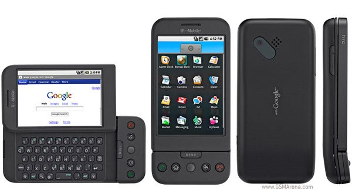
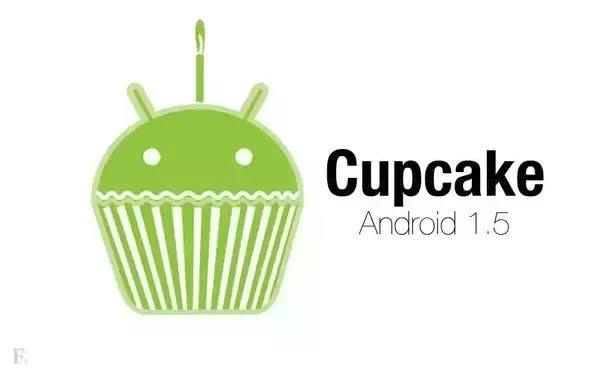
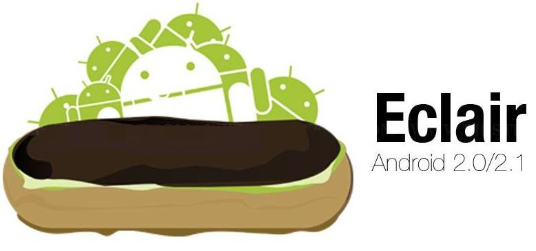
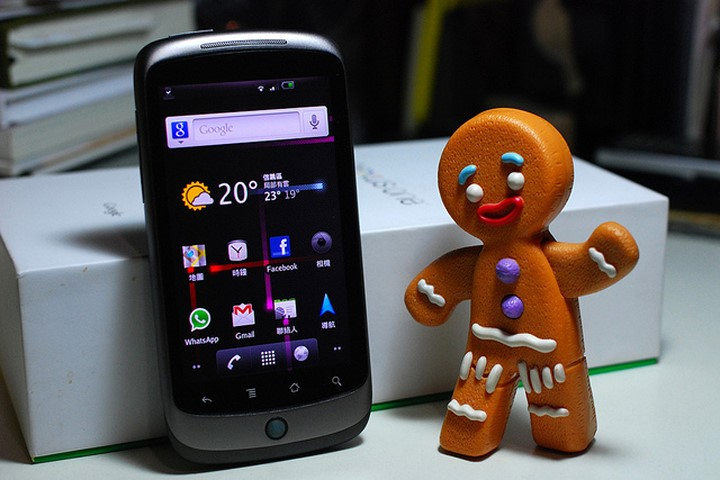
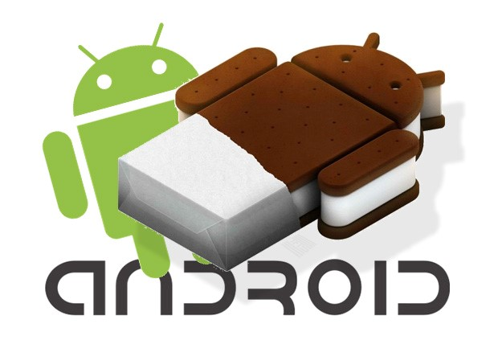
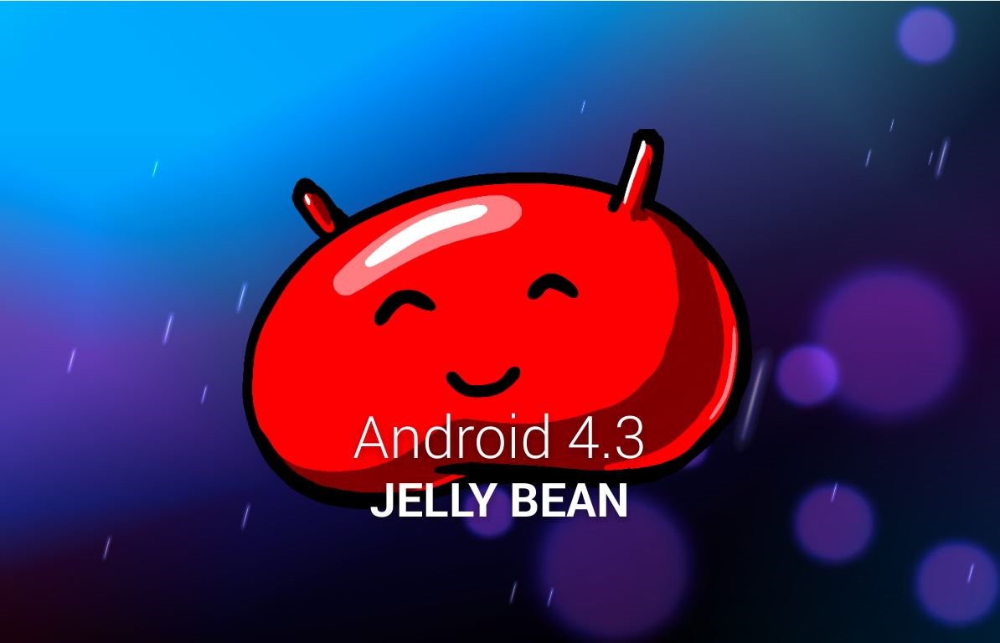
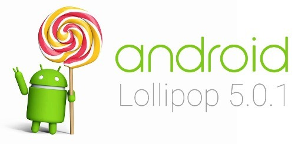

Giới thiệu về hệ điều hành Android
Android là một hệ điều hành có mã nguồn mở dựa trên nền tảng Linux được thiết kế dành cho các thiết bị di động có màn hình cảm ứng như điện thoại thông minh và máy tính bảng.
Ban đầu, Android được phát triển bởi Tổng công ty Android, với sự hỗ trợ tài chính từ Google, sau này được chính Google mua lại vào năm 2005 và hệ điều hành Android đã ra mắt vào năm 2007. Chiếc điện thoại đầu tiên chạy Android là HTC Dream được bán vào ngày 22 tháng 10 năm 2008.
Chính mã nguồn mở cùng với giấy phép không có nhiều ràng buộc đã cho phép các nhà phát triển thiết bị, mạng di động và các lập trình viên được điều chỉnh và phân phối Android một cách tự do. Những yếu tố này đã giúp Android trở thành nền tảng điện thoại thông minh phổ biến nhất thế giới. Android chiếm 75% thị phần điện thoại thông minh trên toàn thế giới vào thời điểm quý 3 năm 2012, với tổng cộng 500 triệu thiết bị đã được kích hoạt và 1,3 triệu lượt kích hoạt mỗi ngày. Tháng 10 năm 2012, đã có khoảng 700.000 ứng dụng trên Android, và số lượt tải ứng dụng từ Google Play (cửa hàng ứng dụng chính của Android) ước tính khoảng 25 tỷ lượt. Hiện nay con số này đã giảm xuống do sự ảnh hưởng lớn của iOS từ Apple và một phần nhỏ của Windows Phone, tuy nhiên Android vẫn dẫn đầu thị phần.
Sự phát triển của hệ điều hành Android
-
23/9/2008
Android 1.0

Lần đầu xuất hiện, phiên bản Android đời đầu góp mặt trên chiếc điện thoại J1 của nhà mạng T-Mobile. So với những hệ điều hành di động phổ biến thời điểm đó, Android 1.0 đem đến nhiều trải nghiệm mới mẻ độc đáo như màn hình Home Screen, thanh thông báo Notifications được kích hoạt theo phương thức vuốt dọc màn hình theo chiều từ trên xuống.
Ngoài ra, giới công nghệ còn hết sức ấn tượng với khả năng liên kết với Google Gmail của Android 1.0. Sản phẩm làm nên tên tuổi cho Android sau đó là HTC Cream, ra mắt 1 năm sau đó.
-
27/4/2009
Android 1.5
Cup Cake

Rút kinh nghiệm từ Android 1.0, trên phiên bản Android 1.5 này, Google đã đem tới nhiều cải tiến đáng chú ý như việc cải tiến giao diện người sử dụng, hỗ trợ bàn phím ảo và dự đoán từ khi nhập văn bản. Một điều thú vị về Android 1.5 là kể từ phiên bản này, ban lãnh đạo Google bắt đầu đặt tên cho hệ điều hành theo các loại bánh kẹo, bắt đầu từ Cup Cake.
-
26/10/2009
Android 2.0 và Android 2.1
Eclair

Phiên bản 3.0. Đây được xem là hệ điều hành có nhiều cải tiến đáng kể và thoát hoàn toàn khỏi cái bóng của MS-DOS. Chính vì điều đó, hệ điều hành này đã trở thành phiên bản phổ biến đầu tiên của hệ điều hành này.
-
20/5/2010
Android 2.2
Froyo
Tới phiên bản 2.2 Froyo, gã khổng lồ phần mềm tiếp tục cập nhật một số tính năng điểm nhấn như Wi-Fi Hotspot, cho phép người dùng cài đặt trực tiếp ứng dụng vào thẻ nhớ ngoài của thiết bị. Điều đáng nhắc tới là từ Froyo, Google bắt đầu chú trọng tới việc xây dựng giao diện của Android để tăng tính thẩm mĩ.
-
6/12/2010
Android 2.3
Gingerbread

Tính tới thời điển phiên bản Gingerbread xuất hiện, hệ điều hành Android đã chứng minh được sức hút không thể cưỡng lại khi đã phủ sóng tới 54% số lượng thiết bị di động trên thị trường. Cũng trong năm này, Samsung bắt tay với Google để tung ra chiếc điện thoại Nexus S. Ưu thế của Android 2.3 nằm ở việc hệ điều hành này cho phép hỗ trợ camera trước, đi kèm với giao diện đẹp mắt và giúp tiết kiệm điện.
-
16/12/2011
Android 4.0
Ice Cream Sandwich

Bước vào cuối năm 2011, Google bắt đầu tung ra thị trường mẫu điện thoại Galaxy Nexus chạy hệ điều hành Android 4.0 Ice Cream Sandwich. Nhiều chuyên gia đánh giá đây là phiên bản chứa đựng nhiều sự thay đổi mạnh mẽ nhất qua các thế hệ Android. Trên bản 4.0 này, Google đã làm mới hoàn toàn hệ thống thông báo Notification sao cho tiện dụng và đẹp mắt hết sức có thể, đặc biệt là việc cho phép người dùng trượt ngón tay để xóa các thông báo. Công cụ bàn phím cũng được tinh chỉnh khả năng sửa lỗi tự động cũng như thao tác sao chép và dán nội dung. Đáng nói nhất là việc Google quyết định thống nhất một hệ điều hành duy nhất cho cả smartphone và tablet.
-
25/7/2013
Android 4.3
Jelly Bean

Nhân dịp ra mắt sản phẩm Nexus 7, Google giới thiệu tới mọi người phiên bản Android 4.3 Jelly Bean cùng hàng loạt các tính năng mới như API OpenGL ES 3.0, Bluetooth smart và khả năng định vị bằng Wi-Fi. Đồng thời, hãng cũng hoàn thiện khả năng tương tác giữa nhiều tài khoản và cấp quyền cho cha mẹ để đề phòng trẻ em mua sắm app tốn hàng trăm USD.
-
25/6/2014
Android 5.0
Lollipop

Có những cải tiến đáng kể nhằm tiết kiệm pin tối đa cho điện thoại, tích hợp ứng dụng sâu hơn vào hệ thống, đồng bộ hóa mọi thiết bị.
Ưu điểm
Là hệ điều hành có mã nguồn mở nên khả năng tuỳ biến cao, có thể tùy ý chỉnh sửa mà không có sự can thiệp hay cấm cản từ Google.
Đa dạng sản phẩm, rất nhiều hãng điện thoại, thiết bị công nghệ đã ưu ái chọn Android cho thiết bị của họ, giá cả thì hợp lý từ bình dân đến cao cấp.
Kho ứng dụng Google Play Store đồ sộ.
Thân thiện và dễ sử dụng.
Khả năng đa nhiệm, chạy cùng lúc nhiều ứng dụng cao.
Nhược điểm
Dễ nhiễm phần mềm độc hại và virus. Do tính chất mã nguồn mở, nhiều phần mềm không được kiểm soát có chất lượng không tốt hoặc lỗi bảo mật vẫn được sử dụng.
Kho ứng dụng quá nhiều dẫn đến khó kiểm soát chất lượng, thiếu các ứng dụng thật sự tốt.
Sự phân mảnh lớn. Trong khi một số thiết bị Android xuất sắc đã trình làng như Galaxy S5, Galaxy Note 4, Xperia Z3,… vẫn còn rất nhiều sản phẩm giá rẻ bình thường khác.
Cập nhật không tự động với tất cả thiết bị. Khi một phiên bản hệ điều hành mới ra mắt, không phải tất cả sản phẩm đều được cập nhật, thậm chí nếu muốn trải nghiệm bạn thường xuyên phải mua mới thiết bị.